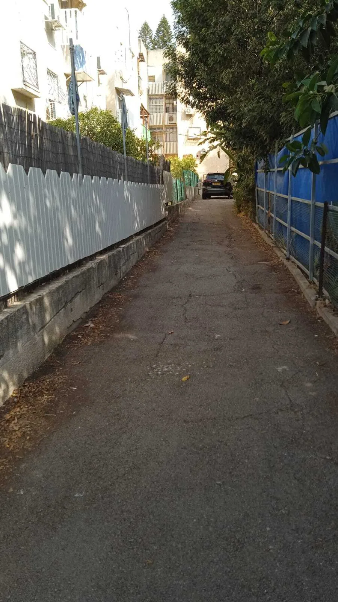
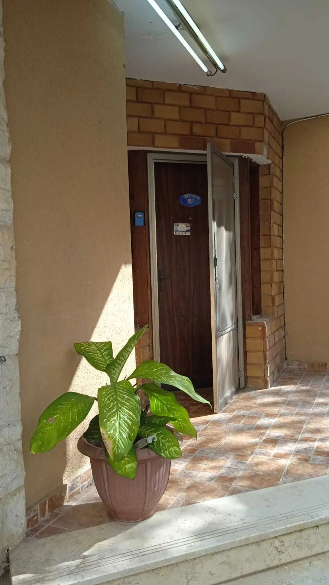
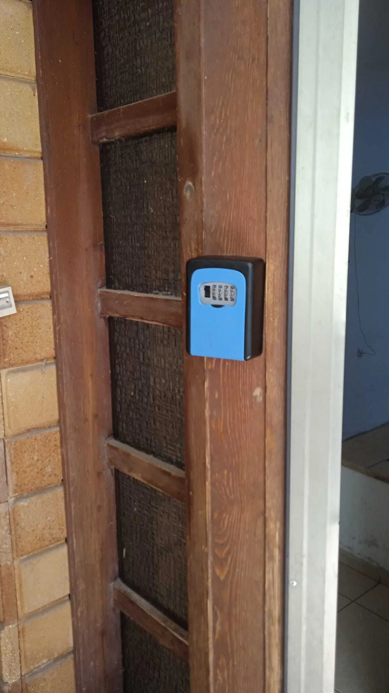
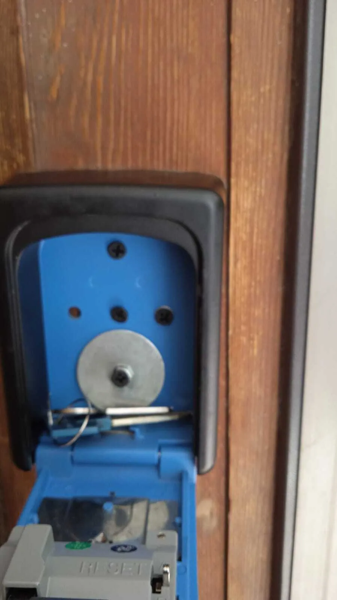
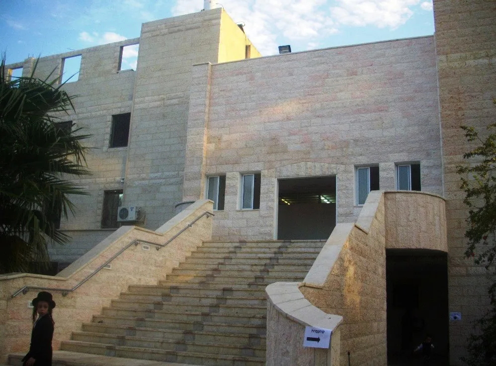

אתם מגיעים לסוקולוב 30 קרית אתא ובשביל הזה אתם נכנסים.
ניתן לחנות בסוף השביל
אמנם אם יש חניה פנויה ברחוב עדיף לחנות ברחוב, היות והשביל צר וקצת קשה לצאת בו.

אתם פוסעים בשביל עד הסוף.
אם יש לכם רכב ניתן להחנות אותו בחניה הכין שהרכב השחור בתמונה.
יש להקפיד להנכס עמוק לחניה שלא להפריע לאוטו הלבן לצאת בבוקר.

הגעתם אל הוילה בקומה הראשונה.
בשביל להכנס יש לפתוח את כספת המפתחות.

הגעתם לכספת פתחו את המכסה השחור - במידה והוא סגור

סובבו את המספרים לקוד 3030
ופתחו את הכספת.
בתוכו יש מפתח רב בריח של הדלת.

המפתח הלבן הוא של המרפסת.
שם יש מנעול על הסורג.

יש לכם אינטרנט בחינם בדירה:
name: hanan
passwoed: 0505901918
בקישור הזה תוכלו לראות את כל זמני התפילות בעיר.
במיוחד של ישיבת מאקווא שנמצאת ממש לידכם.
תוכלו אפילו לראות אותה מהמרפסת.
